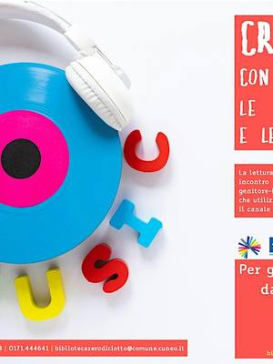
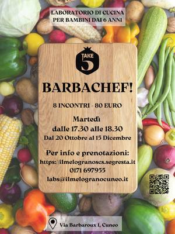
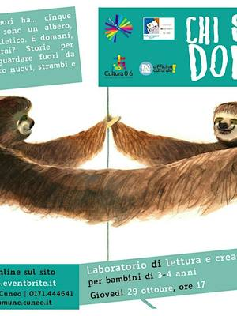
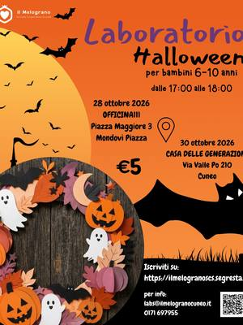
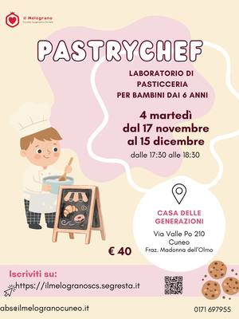

Workshop e corsi a Cuneo
Tutti i workshop, i corsi e le attività in arrivo a Cuneo città.
Cerca con tutti i filtri8 attività in arrivo · aggiornato il 21 ottobre 2026
 sab24ottAltroWorkshop di candele: atmosfere d’autunnosabato 24 ottobre, 09:00–11:30Cuneo (CN)con Cooperativa Il Melograno con Nura.it
sab24ottAltroWorkshop di candele: atmosfere d’autunnosabato 24 ottobre, 09:00–11:30Cuneo (CN)con Cooperativa Il Melograno con Nura.it
sab24ottPer famiglieMusica e parole: per bimbi da 6 a 14 mesisabato 24 ottobre, 11:15–12:00Cuneo (CN) · Gratiscon Biblioteca 0-18 di Cuneo con Noau Officina Culturale- mar27ottPer famiglieTuono: lettura e gioco 7-10 annimartedì 27 ottobre, 17:00–18:00Cuneo (CN) · Gratiscon Biblioteca 0-18 di Cuneo con Noau Officina Culturale

dal20ottPer famiglieBarbachef: cucina per bambinida martedì 20 ottobre a martedì 15 dicembre, ogni martedì, 17:30–18:30Cuneo (CN) · 80 € per 8 incontricon Cooperativa Il Melograno
gio29ottPer famiglieChi saremo domani: storie per 3-4 annigiovedì 29 ottobre, 17:00–18:00Cuneo (CN) · Gratiscon Biblioteca 0-18 di Cuneo con Noau Officina Culturale
ven30ottPer famiglieLaboratorio di Halloween: lavoretti creativivenerdì 30 ottobreCuneo (CN) · 5 €con Cooperativa Il Melograno- dal13novPer famiglieLalababy: musica per i più piccolida venerdì 13 novembre a venerdì 4 dicembre, ogni venerdì, 16:45–17:30Cuneo (CN)con Cooperativa Il Melograno

dal17novPer famigliePastrychef: pasticceria per bambinida martedì 17 novembre a martedì 15 dicembre, ogni martedì, 17:30–18:30Cuneo (CN) · 40 € per 4 incontricon Cooperativa Il Melograno